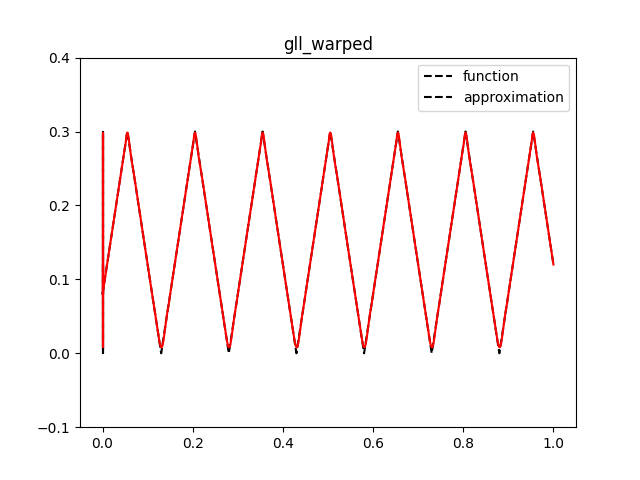
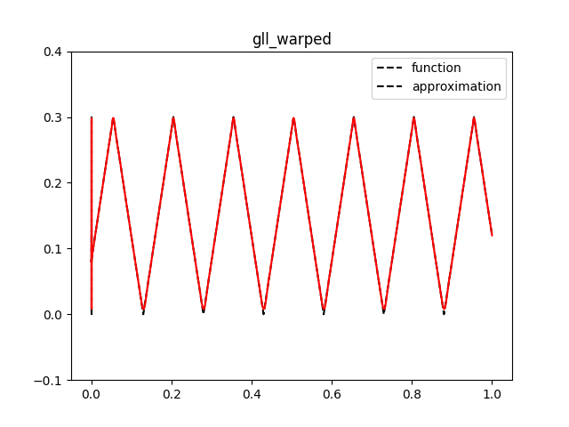

Variants of Lagrange elements
Download sources
This demo illustrates how to:
Define finite elements directly using Basix
Create variants of Lagrange finite elements
We begin this demo by importing the required modules.
Equispaced versus Gauss–Lobatto–Legendre (GLL) points
The basis functions of a Lagrange element are defined by placing
points on the reference element, with each basis function equal to 1
at one point and 0 at all the other points. To demonstrate the
influence of interpolation point position, we create a degree 10
element on an interval using equally spaced points, and plot the basis
functions. We create this element using basix.ufl’s
element function. The function element.tabulate returns a 3-
dimensional array with shape (derivatives, points, (value size) *
(basis functions)).
In this example, we only tabulate the 0th derivative and the value
size is 1, so we take the slice [0, :, :] to get a 2-dimensional
array.
N = 20
element = basix.ufl.element(
basix.ElementFamily.P,
basix.CellType.interval,
10,
basix.LagrangeVariant.equispaced,
dtype=default_real_type,
)
lattice = basix.create_lattice(basix.CellType.interval, 200, basix.LatticeType.equispaced, True)
values = element.tabulate(0, lattice)[0, :, :]
if MPI.COMM_WORLD.size == 1:
for i in range(values.shape[1]):
plt.plot(lattice, values[:, i])
plt.plot(element._element.points, [0] * 11, "ko")
plt.ylim([-1, 6])
plt.savefig("demo_lagrange_variants_equispaced_10.png")
plt.clf()
The basis functions exhibit large peaks towards the ends of the interval. This is known as Runge’s phenomenon. The amplitude of the peaks increases as the degree of the element is increased.
To rectify this issue, we can create a ‘variant’ of a Lagrange element that uses the Gauss–Lobatto–Legendre (GLL) points to define the basis functions.
element = basix.ufl.element(
basix.ElementFamily.P,
basix.CellType.interval,
10,
basix.LagrangeVariant.gll_warped,
dtype=default_real_type,
)
values = element.tabulate(0, lattice)[0, :, :]
if MPI.COMM_WORLD.size == 1: # Skip this plotting in parallel
for i in range(values.shape[1]):
plt.plot(lattice, values[:, i])
plt.plot(element._element.points, [0] * 11, "ko")
plt.ylim([-1, 6])
plt.savefig("demo_lagrange_variants_gll_10.png")
plt.clf()
The points are clustered towards the endpoints of the interval, and the basis functions do not exhibit Runge’s phenomenon.
Computing the error of an interpolation
To demonstrate how the choice of Lagrange variant can affect computed results, we compute the error when interpolating a function into a finite element space. For this example, we define a saw tooth wave that will be interpolated.
def saw_tooth(x):
f = 4 * abs(x - 0.43)
for _ in range(8):
f = abs(f - 0.3)
return f
We begin by interpolating the saw tooth wave with the two Lagrange elements, and plot the finite element interpolation.
msh = mesh.create_unit_interval(MPI.COMM_WORLD, N)
x = ufl.SpatialCoordinate(msh)
u_exact = saw_tooth(x[0])
for variant in [basix.LagrangeVariant.equispaced, basix.LagrangeVariant.gll_warped]:
ufl_element = basix.ufl.element(
basix.ElementFamily.P, basix.CellType.interval, 10, variant, dtype=default_real_type
)
V = fem.functionspace(msh, ufl_element)
uh = fem.Function(V)
uh.interpolate(lambda x: saw_tooth(x[0]))
if MPI.COMM_WORLD.size == 1: # Skip this plotting in parallel
pts: list[list[float]] = []
cells: list[int] = []
for cell in range(N):
for i in range(51):
pts.append([cell / N + i / 50 / N, 0, 0])
cells.append(cell)
values = uh.eval(pts, cells)
plt.plot(pts, [saw_tooth(i[0]) for i in pts], "k--")
plt.plot(pts, values, "r-")
plt.legend(["function", "approximation"])
plt.ylim([-0.1, 0.4])
plt.title(variant.name)
plt.savefig(f"demo_lagrange_variants_interpolation_{variant.name}.png")
plt.clf()
 

The plots illustrate that Runge’s phenomenon leads to the interpolation being less accurate when using the equispaced variant of Lagrange compared to the GLL variant. To quantify the error, we compute the interpolation error in the \(L_2\) norm,
where \(u\) is the function and \(u_h\) is its interpolation in the finite element space. The following code uses UFL to compute the \(L_2\) error for the equispaced and GLL variants. The \(L_2\) error for the GLL variant is considerably smaller than the error for the equispaced variant.
for variant in [basix.LagrangeVariant.equispaced, basix.LagrangeVariant.gll_warped]:
ufl_element = basix.ufl.element(
basix.ElementFamily.P, basix.CellType.interval, 10, variant, dtype=default_real_type
)
V = fem.functionspace(msh, ufl_element)
uh = fem.Function(V)
uh.interpolate(lambda x: saw_tooth(x[0]))
M = fem.form((u_exact - uh) ** 2 * ufl.dx)
error = msh.comm.allreduce(fem.assemble_scalar(M), op=MPI.SUM)
print(f"Computed L2 interpolation error ({variant.name}):", error**0.5)
Available Lagrange variants
Basix supports numerous Lagrange variants, including:
basix.LagrangeVariant.equispacedbasix.LagrangeVariant.gll_warpedbasix.LagrangeVariant.gll_isaacbasix.LagrangeVariant.gll_centroidbasix.LagrangeVariant.chebyshev_warpedbasix.LagrangeVariant.chebyshev_isaacbasix.LagrangeVariant.chebyshev_centroidbasix.LagrangeVariant.gl_warpedbasix.LagrangeVariant.gl_isaacbasix.LagrangeVariant.gl_centroidbasix.LagrangeVariant.legendre
Equispaced points
The variant basix.LagrangeVariant.equispaced defines an element
using equally spaced points on the cell.
GLL points
For intervals, quadrilaterals and hexahedra, the variants
basix.LagrangeVariant.gll_warped, basix.LagrangeVariant.gll_isaac
and basix.LagrangeVariant.gll_centroid all define an element using
GLL-type points.
On triangles and tetrahedra, the three variants use different methods to distribute points on the cell so that the points on each edge are GLL points. The three methods used are described in the Basix documentation.
Chebyshev points
The variants basix.LagrangeVariant.chebyshev_warped,
basix.LagrangeVariant.chebyshev_isaac and
basix.LagrangeVariant.chebyshev_centroid can be used to define
elements using Chebyshev
points. As with GLL
points, these three variants are the same on intervals, quadrilaterals
and hexahedra, and vary on simplex cells.
GL points
The variants basix.LagrangeVariant.gl_warped,
basix.LagrangeVariant.gl_isaac and
basix.LagrangeVariant.gl_centroid can be used to define elements
using Gauss-Legendre (GL)
points.
GL points do not include the endpoints, hence this variant can only be
used for discontinuous elements.
Legendre polynomials
The variant basix.LagrangeVariant.legendre can be used to define a
Lagrange-like element whose basis functions are the orthonormal
Legendre polynomials. These polynomials are not defined using points
at the endpoints, so can also only be used for discontinuous elements.